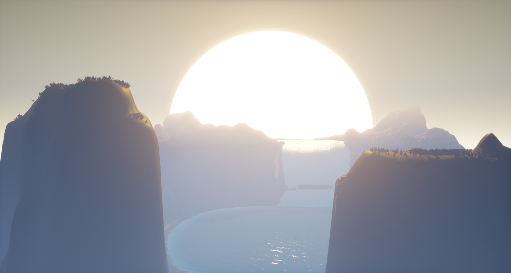
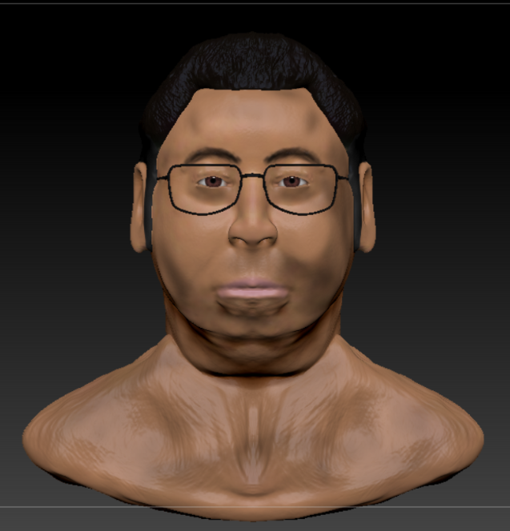

Unreal Engine - Landscape
ชื่อผลงาน : Idyllic Falls
ผมตั้งใจจะทำเป็นน้ำตกลึกลับ ที่เมื่อพระอาทิตย์ขึ้นแสงจากพระอาทิตย์จะกระทบดานบนของน้ำตก ทำให้เกิดแสงสะท้อนจากน้ำอันสวยงาม
ผมเริ่มจากการปั้นพื้นดินและภูเขา แต่งสี ใส่ Material และการเพิ่มหญ้าลงบนภูเขา จากนั้นผมใช้ Water Plug-in ในการสร้างแอ่งน้ำและน้ำตกขึ้นมา ต่อด้วยการเพิ่มแสงสีตามเข้ามาทำให้น้ำที่เกิดจาก Water Plug-in มีการสะท้อนของแสง สุดท้ายนี้ผมได้เพิ่มหมอกให้เหมือนหมอกที่เกิดจากน้ำตก เป็นอันเสร็จสิ้นผลงาน

Zbrush - Modeling
ชื่อผลงาน : Johnny ผมตั้งใจจะปั้นโครงหน้าตัวละครที่ชื่อ 'John' จากเกม 'The Dark Pictures Anthology: Little Hope'
ผมเริ่มจากการทำโครงหน้าตัวละคร จัดวางตำแหน่งหูตาจมูกตามรูปแบบมาตรฐาน จากนั้นผมจึงเริ่มปั้นและแต่งเติมรายละเอียด เริ่มลงสีโดยเริ่มจากลงสีตามมาตรฐานก่อนแล้วจึงเริ่มลงสีผิว สีผม สีปากและตาตามลำดับ จากนั้นผมได้ Import แว่นตาจากโปรแกรม Maya มาใช้ใน Zbrush เพื่อเพิ่มความเหมือนให้มากยิ่งขึ้น
